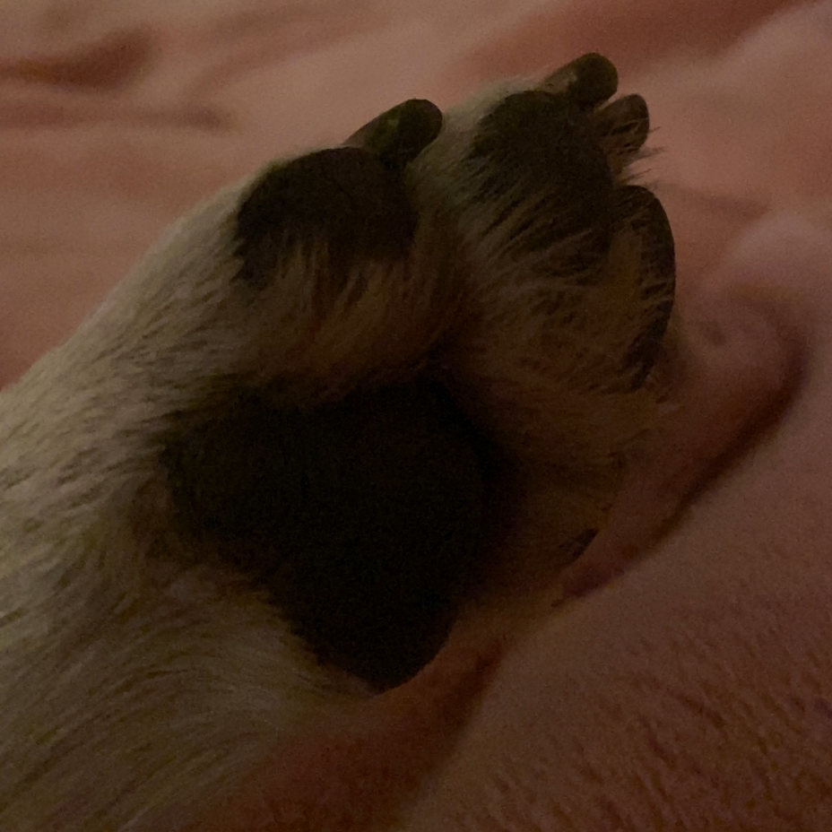

Molnár Gombóc vagyok egy igazán aranyos és cuki Foxi. De ez ne tévesszen meg senkit, mert amikor kell akkor tudok csattogni is! Fiatal korom óta őrzöm, védem Érd zord utcáit a gonosz mókusoktól és madaraktól. Csak akkor engedek be valakit az otthonukba, ha ajándékokkal érkezik nekem!
Anyukám szerint mindig túdálékoskódok, de ő nem látja, hogy én mindig csak védelmezni próbálom őt és szerető családját! Jóóó, lehet az is benne van, hogy keresem a lehetőséget a kaja kunyerálásra.. De hát muszáj olyankor mikor egy hercegnőt nem mindig virslivel és egyéb fini juti falatokkal táplálnak.
Hát ha van örök szerelem az köztem és a legjobb barátom és társam között van! Mindig húzom az "agyát" de eddig jól bírja a strapát. Ki tudom rajta csámcsogni a bajaimat és ez engem nagyon boldoggá tesz. Bár hozzá tenném, hogy igen féltékeny típus vagyok és amikor más is közeledne hozzá, azt nem nézem jó szemmel. De minden egyes ilyen összetalálkozásnál én kerekedek felül azon aki engem a szerelmemtől próbál elszakítani.
Mivel kapok kaját tőlük ezért megengedem, hogy simizzék a testemet (de csak amíg meg nem unom). Reggel mindig megyek a papával egy terep szemlére és megvizsgáljuk hogy történt e bármi fajta behatolás a komplexumba. Tudom, hogy a mama is nagyon szeret (és én is őt), de kijelölt részeket a házban ahove én nem mehetek be. Ez néhe mélyen megvisel, hiszen hogy tudjam így elvégezni a feladataimat ha nem tudom őket mindenhova követni? És végül anyu, aki igazán tudja, hogy mitől indul be a farokcsoválás. Az ágyban mindig együtt tv-zünk és mindig akad valami a spájzból. Bár szó ami szó, vannak fura dolgai neki is, például mindig a fülemet szaglássza.. FURCSA.
Csak majdnem két éve ismerem és soha nem voltam ilyen boldog előtte! Mindig nagyon vár már, hogy lásson én meg azt hogy hozzon valamit! Együtt szoktunk edzeni is és a legújabb sport amit folyton csinálunk a ballett (Dégagé.. Dégagé.. mindig ezt gyakoroljuk). Ha tehetném mindig vele lehetek, de kötelességeimet nem dobhatom el miatta sajnos. A ház őrzése az én igazi hivatásom.
Nem minden Foxi Gombóc, de Gombóc a legjobb Foxi. Egy nagyon bölcs ember mondhatta, az fix!